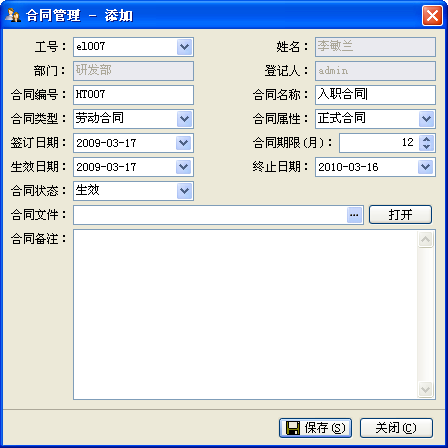
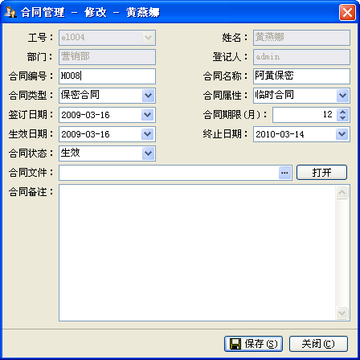

| 合同管理 - 添加、编辑 |
|
您可以为已有的员工添加合同，也可以修改已有的合同信息。在秋风人事档案管理系统中，你有两种方法添加一个员工合同： 1．菜单的[合同管理]->[添加]。 2．你在浏览合同信息时，它上面的[添加]工具按钮可用。 合同添加页如如下图所示：  您需要从[工号]处先选择一个已存在的员工信息，其姓名、部门会一并列出，然后设置合同数据。其中工号、合同编号及合同名称不能为空，且合同编号不能重复。 其中的[合同类型]在分类信息中设置，而合同属性、合同状态，若数据库中已有记录，则从其中获取，没有则用默认值。而合同状态在合同管理窗体中，有生效中、未生效、已过期、已解除四种状态。 您可以编辑一个已存在的合同记录，请在合同管理窗体中操作，界面如下图：  合同处于编辑状态时，员工工号等信息将不能被修改，您可以修改合同的其它信息，同样合同号不能与已有的重复。 |